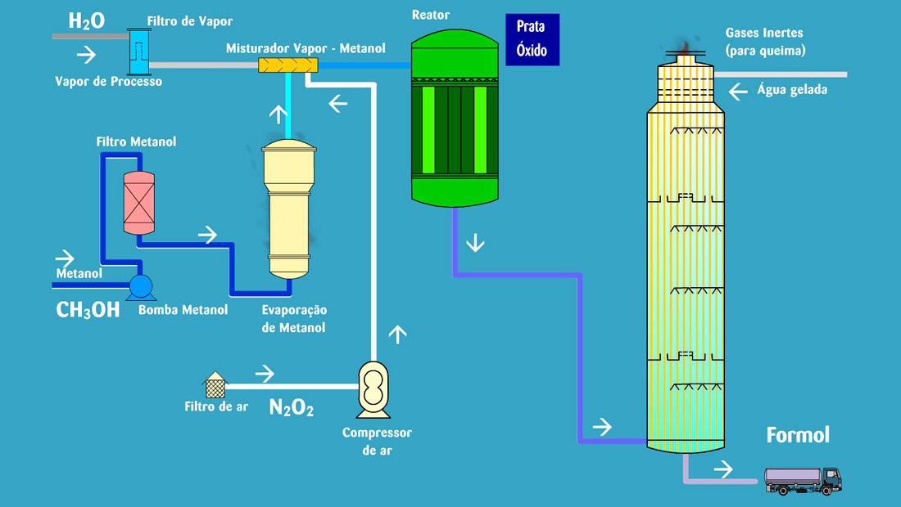

Agroindústria
Aplicações
- Fertilizantes
- Defensivos agrícolas
Formol é a solução aquosa de formaldeído (CH₂O), o mais simples dos aldeídos. Em temperatura ambiente o formaldeído é um gás incolor, de odor característico; por isso é produzido e comercializado em solução, com concentração de 37% a 50%.

O formol é obtido pela oxidação parcial do metanol sobre um catalisador, que pode ser prata metálica ou óxido de ferro-molibdênio, conforme o processo utilizado.


Capacidade instalada de formol no Brasil, base 37%.
Agente estabilizante, bactericida ou plastificante em resinas sintéticas, o formol é insumo de três grandes cadeias: agroindústria, químicos e resinas termofixas.
O formaldeído está presente em quase tudo o que faz parte do nosso dia a dia — das roupas que vestimos aos alimentos, à saúde e à indústria.

Fundamental para a produção de centenas de itens utilizados no cotidiano, tais como: móveis, medicamentos, cosméticos, papel toalha, filmes fotográficos, componentes eletrônicos para computadores, aviões e automóveis.
Na indústria têxtil, auxilia na impregnação das tintas e pigmentos.
Na agricultura, é importante matéria-prima na produção de fertilizantes, amônia, glifosato, herbicidas, etc.
Na indústria de rações, é de grande ação antimicrobiana, bactericida e fungicida.
Matéria-prima base das resinas para produção de painéis de madeira MDF, MDP, aglomerado, compensados e OSB, bem como de papéis de impregnação.
Mercados de abrasivos, materiais de fricção, impregnação, refratários e outros.
Resinas para a cobertura de areia para o processo de Shell Molding.
Indústria automotiva: painéis, para-choques, componentes de transmissão, sistema elétrico, painéis das portas e até mesmo pintura.
Operações de extração de petróleo.